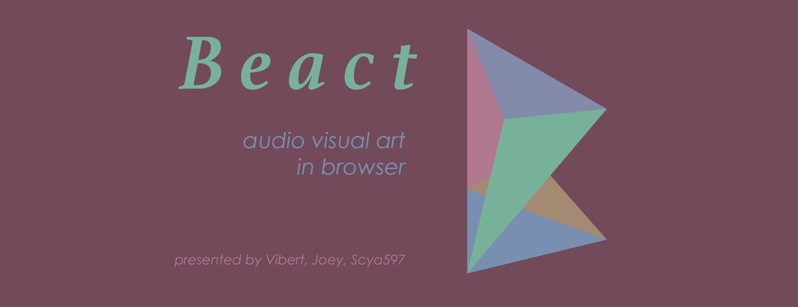
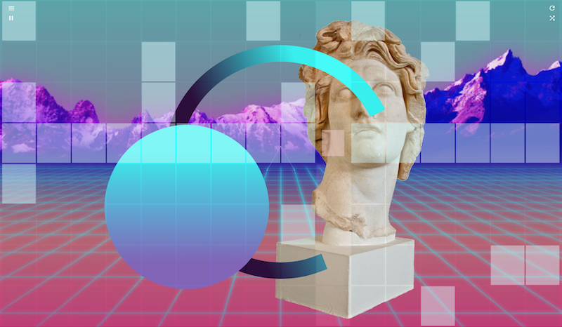

Beact · 
🎸🎨 DJ / VJ all by yourself in seconds !
- demo - It's deployed on Heroku, play it now!
- video - Short video of using Beact for performance!
- blog(vibert) - vibert's words after creating Beact!
- english version - vibert's words after creating Beact!
- blog(scya) - scya597's words after creating Beact! (only mandarin now, english coming)
An audio/visual interactive art piece, and an instrument that everyone play with to become a DJ + VJ. It's based on the idea of patatap, and using two.js, tone.js as audio and visual library. It combines sequencer with on concept of patatap. I have added some my own animation and will do more to replace ones from patatap.
0. Table of Contents
1. Quick Start
- open the demo link.
- press space to start/stop.
- click any block to trigger drum machine note.
- press any alphabet to trigger keyboard note.
- up/down to change bpm.
- left/right to change sound bank of drum machine.
- press 1 ~ 8 for different presets.
- shift+up/down to change animations of keyboard.
- shift+left/right to change animations of drum machine.
- press naruto icon to set naruto animation of keyboard.

2. Run on Local
It's okay to run Beact without server. It will git some error in console irrelevant, though.
First, clone the repo and install dependencies.
Then Rock'n Roll, baanngg.
git clone https://github.com/vibertthio/beact beact
cd beact
npm install
npm run build
npm run start3. Development
Run Beact with server, giving you the Force.
3.1 To install mongodb
brew install mongo3.2 Initial config of mongodb
Create database directory
sudo mkdir -p /data/dbFind your username
whoamiTaking ownership to /data/db
// assume your username is John
sudo chown -Rv John /data/db3.3 To run the database
mongodIf you don't want to run mongod everytime you need, the following command will automatically start your database while the computer is running:
brew services start mongo3.4 To develop Beact
npm run dev4. Deploy
We are using great Heroku for current deploy.
4.1 Clone the repo, install dependencies, and build.
git clone https://github.com/vibertthio/beact Beact
cd Beact
npm install
npm run build4.2 Delete /public in "Ignore build files" of .gitignore
# Ignore build files
public << (delete)4.3 Deploy
heroku create
heroku addons:create mongolab:sandbox
npm run deploy5. Basic Usage
5.1 Keyboard & Sequencer Pads
- click on the drum pad to make your own pattern.
- press space to start/stop.
- press up/down for bpm changing.
- left/right to change sound samples.
- press 1~8 to trigger preset patterns.
- press a~z to trigger animation and audio just like patatap.
5.2 Sidebars
- Start / Stop
- Pattern : create a pattern, type in the name, and press add to upload yours to server and store.
- Chain：chain few patterns into a song.
- Recorder：record the drum machine pattern and keyboard together into a recording, and upload to server for you to share and replay.